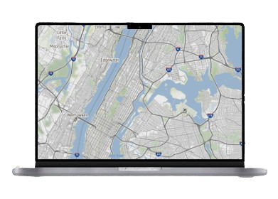
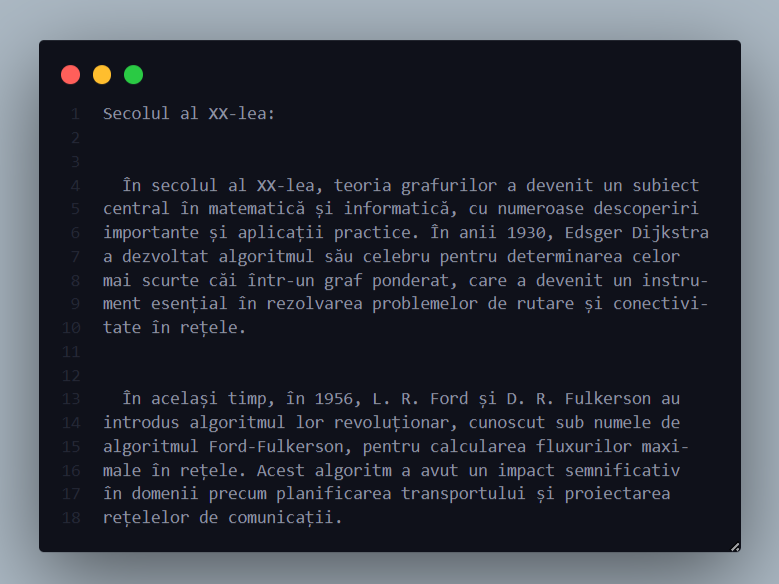
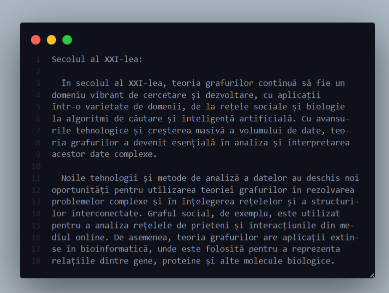
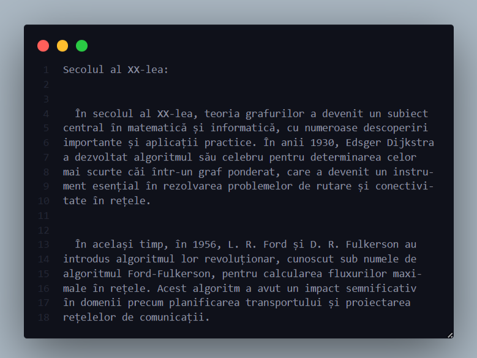
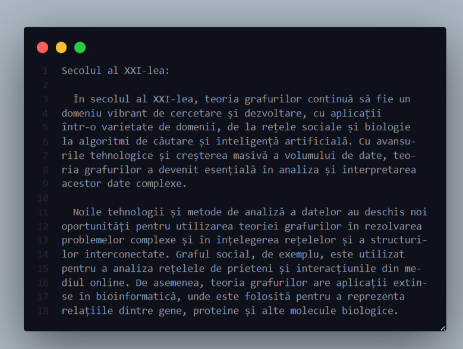

Instagram, una dintre cele mai populare platforme de socializare, utilizează, de asemenea, grafuri pentru a afișa conținutul relevant utilizatorilor săi. Grafurile de interacțiuni sociale sunt esențiale aici, determinând conexiunile între utilizatori pe baza urmăririlor, aprecierilor și comentariilor. Aceste grafuri sunt apoi folosite pentru a personaliza feed-ul fiecărui utilizator, afișând conținut care este probabil să le captiveze interesul.

Un exemplu prominent este Google Maps, unde grafurile sunt folosite pentru a determina cele mai rapide rute de călătorie între două puncte. Fiecare intersecție și drum sunt reprezentate ca noduri într-un graf, iar drumurile care le conectează sunt muchiile acestuia. Prin aplicarea algoritmilor adecvați pe aceste grafuri, Google Maps poate calcula rutele optime în funcție de trafic, distanță sau alte criterii.



 


